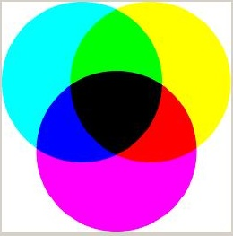
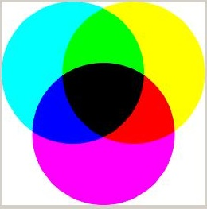

The Intro tab panel points out the difference between composing colors as pigment and as light, and indicates which tab panels to explore in order to learn more about colors. A button links directly to the Color Spaces tab for more information about the various spaces used to represent color.
 
